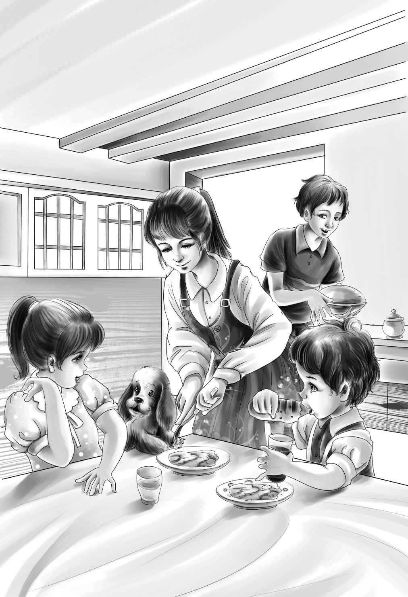

The Garden
第二天早上，杰西并不是第一个起床的人。六点时，亨利便悄悄来到望望的“房间”，打开推拉门，将它放了出来。小狗静静地跟着亨利，走出马厩来到了泉水边。亨利站在那儿，打量了一下四周，果然跟他昨晚看到的一样，岛上真的有一个菜园，里面种着成排的蔬菜。
“不知道这个菜园是不是丹尼尔船长的。”亨利暗想。
这时，他听到身后传来一阵轻微的声响，于是他转过头去。只见一个年轻人正低着头，朝他走过来。亨利仔细打量着来者，觉得这个年轻人看起来一副十分伤感的样子。不过，当那个陌生人抬起头朝他微微一笑时，亨利就打消了这个想法。
“我是大乔，”他说，“我是来这儿帮工的。喜欢你们的菜园吗？”
“我们的？它是我们的？”亨利惊讶地问道。
“没错，这座岛上有两个菜园，一个是丹尼尔船长的，另外一个是你们的。”
“这怎么可能？”亨利问，“我刚到这儿。”
“哦，你们的爷爷早知道你们可能更乐意自己种菜，可要是等到学校放假后时令便太晚了。于是他让丹尼尔船长先把菜种了下去，还说等你们来了以后，锄草和照看菜园的任务便交给你们了。”
“没问题！”亨利剥开了一粒豌豆，“豆子已经可以吃了。”
“对，”大乔说，“豌豆刚刚成熟，但其他蔬菜还需要再等一段时间。”
“你有没有吃过菜苗？我们吃过一次！”亨利说，“当时菜园里的蔬菜太密了，需要拔一些出来。一想到菜苗可口的味道，我都要流口水了。我那两个妹妹几乎不需要什么调料，就能做出相当好吃的菜来。”
这时，另外几个孩子也出现了。班尼第一个打招呼：“你好，大乔！你肯定就是大乔。这是你的菜园吗？”
“不是，”大乔笑了起来，“是你们的。”
“噢，不会吧？这不可能。”班尼说。
“真的是咱们的，班尼，”亨利说，“大乔和丹尼尔船长帮咱们播的种，你可以给它们锄草。”
“现在可不行，”班尼说，“我想吃早饭啦。”
“我们很快就能吃上，”杰西微笑着对大乔说，“这是维莉，我叫杰西。”
大乔说：“我知道，丹尼尔船长把你们的名字都告诉我了。我感觉跟你们似乎早就认识了。”
“噢，看，”班尼喊道，“豌豆！午饭我想吃豌豆！”
“那就这么定了，”杰西说，“咱们午饭吃豌豆，你们帮我摘一些下来，然后把豆子都剥出来。”
在柴堆那儿和大乔分手后，大家慢慢地朝着马厩走了回去。
“他人很好，对吗？”维莉的话获得了大家的一致赞同。
孩子们摆好面包、牛奶和四个碗后，便小心翼翼地在包装箱上坐了下来。杰西提议道：“吃完早饭，咱们定个暑假计划怎么样？比如说每天上午去游泳，中午做饭，晚饭后要么做手工活，要么去探险。”
“安排做手工活吧，比如橱柜什么的。”亨利看向维莉。
“好主意，亨利！”维莉兴奋极了。
“今天我就给你们做一个橱柜。”亨利很有把握地说。
“咱们现在就去洗碗，然后去摘豌豆，”杰西说，“我们剥豌豆的时候，亨利正好可以做橱柜。咱们顺便把洗碗盆带过去装豌豆吧！”
孩子们拿着碗和洗碗盆朝泉水走去，路过柴堆时，他们看到大乔还在那儿。
“亨利，”大乔叫住了他，并停下了手里的活儿，“你们知道吗？丹尼尔船长每天早晨都会去岸上采购日常用品。如果你们想要买什么，就在纸上写好，然后把纸条放进码头上的箱子里就可以了。午饭前，丹尼尔船长就能把你们要的东西带回岛上来。”
“噢，太好了！”杰西说，“我正在想怎么买牛奶呢。咱们的牛奶快喝完了。”
“把你们需要的都写下来，我现在就给你们送过去。”大乔说，“我这儿有笔。”
杰西和亨利面对面地坐在石头上，思考着要买些什么。
“咱们得买一些做豌豆用的黄油。”杰西一边说，一边将它记在了一张纸上。那张纸也是大乔从口袋里掏出来递给她的。
“我们还需要面包，每天还要喝四瓶牛奶——整整一个夏天都需要。”亨利补充道。

“还有糖，”班尼叫道，“还要一些狗粮，给望望。”
“对啊！”亨利说，“我差点忘了望望。”
“我想跟大乔一起去，看看那只小箱子。”班尼拉着大乔的手说。
“让他去吧，”维莉说，“他的碗我来洗，而且摘豌豆咱们也用不着他。”
接着，几个大孩子便开始忙活了。他们摘了许多豌豆，除了午饭吃的，还剩下好多。
“够吃两顿多呢！”亨利高兴地说，“而且园子里还会长出不少新豆子。你们两个剥豌豆吧，我赶紧把橱柜做出来。你们放东西需要多少格，杰西？”
“一格用来放勺子什么的。”杰西说。
“一格用来放餐具。”维莉说。
“一格用来放锅和壶，”杰西接着说，“另外还要一格，放其他一些小玩意儿。”
说完，两个女孩便坐在马厩门口剥起了豌豆，亨利则开始做橱柜了。
“咱们什么时候去游泳呢？”杰西随口问道。
“午饭前就可以去，”亨利说，“要是你们做饭太忙，咱们也可以在早餐之前去，而且，下午四点钟的时候可以再去一次。”
“那这样好了！”杰西说，“如果我们想游泳，就早饭前去。如果早饭前不想游，那就下午四点去。或者一天去两次，然后八点睡觉——要不天一黑就睡觉。”
“噢，天哪！我们非要睡那么早吗？”维莉问。
“相信我，你会想那么早睡的，”亨利说，“等着瞧吧。”
豌豆剥完时，班尼也跑回来了。“好大一只箱子啊，维莉，”他说，“上面还有一扇小门，箱子里可以装下好多好多瓶牛奶和其他东西。我喜欢打开小门，从箱子里取东西出来。”
“你都取了些什么回来？”维莉看着他问。
“丹尼尔船长让我带了些信和包裹回。”班尼回答道。
“或许，以后每天这项工作可以由你来做，班尼，”亨利说，“你每天把咱们的订货清单送过去。然后，再把邮件或包裹取回来。”
“这活儿我喜欢。”班尼欢呼道，“丹尼尔船长刚才说，他很快就能把咱们要的东西买回来，到时候我就可以去开那扇小门，把它们全都拿回来了。”
“很好。”亨利说。能找到这么一份既轻松同时又能让班尼开心的活儿，他也很高兴。“过来帮我扶一下这扇门，好吗？”
“噢，咱们的橱柜还有门啊？”维莉惊喜不已。她看到亨利在两扇门上还绑了两条厚实的布条，方便开关。
上午很快便过去了。杰西在小炉子上生了火，用水壶烧开了水，把豌豆放了进去。煮熟之后，她撒了点盐，将豌豆盛到了四个盘子里，并在每个盘子上都放了一块黄油。这时，根本用不着叫大家来吃饭，因为所有人，包括小狗，全都站在周围看着她呢！
“真香啊！”亨利欢呼一声，开始吃了起来。
“噢，太香啦！”班尼也叫了起来。
维莉什么也没说，不过，吃完一盘后，她又盛了一盘。
“我就喜欢这样，”杰西说，“自己动手做的东西，吃起来就是香。”
橱柜做好了，他们在每层格子上铺上白纸，开心地为所有的杯子和碗碟挑选了最合适的摆放位置。到下午一点时，马厩里便已经焕然一新了。孩子们关上橱柜的门，准备和他们的小狗一起去小岛上探险了。